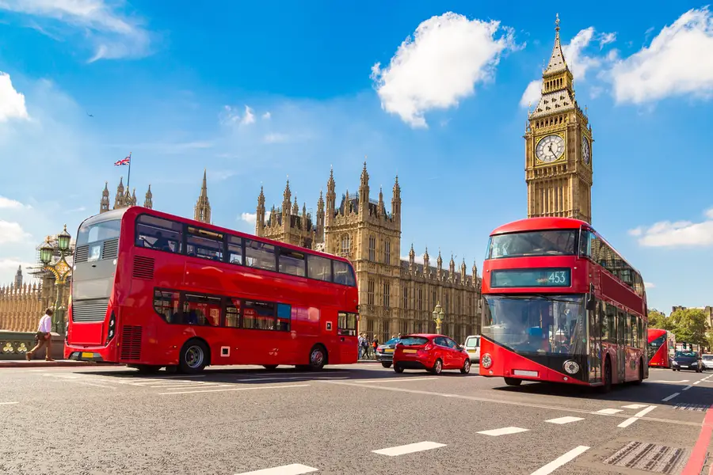
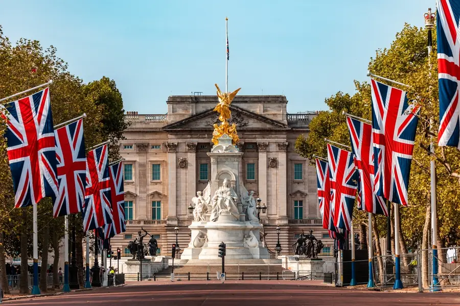

Big Ben & Elizabeth Tower
Located at the north end of the Houses of Parliament in Westminster, Big Ben is one of the world's most recognizable landmarks and an iconic symbol of London.
Top Attractions & Activities
Here are some of the most iconic places to visit during your trip to the United Kingdom.

Located at the north end of the Houses of Parliament in Westminster, Big Ben is one of the world's most recognizable landmarks and an iconic symbol of London.

The official London residence of the British monarch. Visitors can witness the famous Changing of the Guard ceremony and tour the grand State Rooms during summer.

Beyond the cities, the UK boasts stunning national parks, coastal cliffs, and historic medieval castles spread across England, Scotland, and Wales.